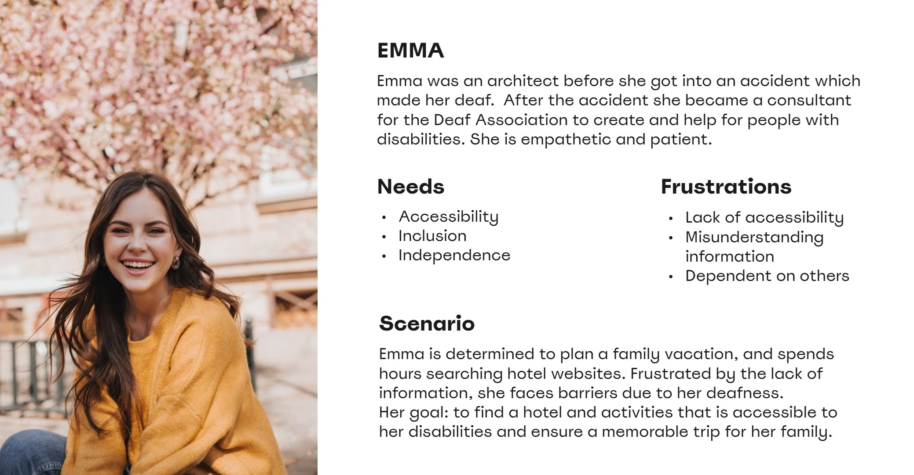
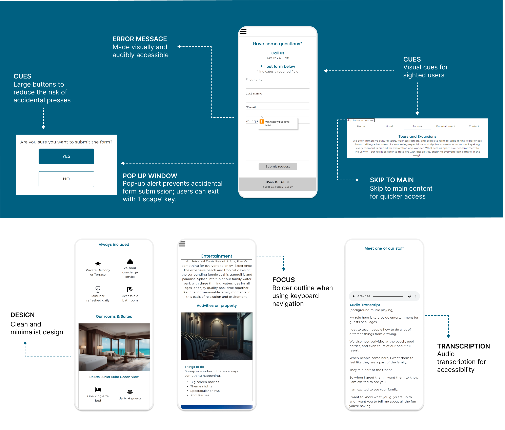

Om prosjektet
Målet med dette prosjektet er å lage en nettside som er lett å navigere for personer med funksjonsnedsettelser på både desktop- og mobil-enheter. Ved å følge prinsippene for universell utforming og integrere Web Content Accessibility Guidelines (WCAG) og ARIA-etiketter, skal det sikre tilgjengelighet for brukere med syns-, hørsel-, kognitiv- og motoriske funksjonsnedsettelser.
Problemet
Hovedmålet er å lage en inkluderende online plattform som legger til rette for lik tilgang til digitalt innhold for alle.
Teamet og min rolle
Dette var en individuell oppgave, og jeg var koder og interaksjonsdesigner.
Tidsramme
1 måned
Verktøy
Figma, Miro, Visual Studio Code
Designprosessen
Som den eneste designeren på prosjektet gjennomførte jeg både innsikt og utvikling av designet, og sørget for at hver beslutning var basert på brukerforskning og tilbakemeldinger.
Forskningsmetodene:
Personas
Jeg laget en persona basert på innsikten: Emma, som ble døv etter en ulykke og sliter med mangel på tilgjengelighet på hotell- og reisesider. Hun elsker familien sin, men setter pris på sin uavhengighet på ferie.
Designet for nettsiden ble laget for å støtte ulike funksjonsnedsettelser, som beskrevet i oppgaven. Imidlertid hjalp Emmas innspill med å fokusere på en spesifikk målgruppe, og påvirket beslutningen om å inkludere undertekster for alle video- og lydelementer.
Informasjonsarkitektur
Wireframing
Mobil
Desktop
UI Design
Jeg valgte en lys og ren visuell stil. Inspirasjonen bak designet var å gjøre det luksuriøst, men samtidig lett å navigere. Det er minimalistisk med minimalt rot.
For effektivitet er det lagt til tilgangsnøkler og "hopp til hovedinnhold" for raskere bruk med tastatur. Feilforebygging er lagt til gjennom obligatoriske elementer i kontaktskjemaet, og en bekreftelsesmelding når skjemaet sendes, som ber om bekreftelse på innsendingen.
Nettsiden er responsiv og fungerer på telefon, nettbrett og laptop. Det jeg er mest stolt av er det overordnede designet og konsistensen.

Prototype
Hva har jeg lært fra dette prosjektet
Jeg lærte mye fra dette prosjektet ved å ta mange av beslutningene og designvalgene selv. Mine to største utfordringer var å gjennomføre forskning uten å ha personer med funksjonsnedsettelser å intervjue eller be om tilbakemeldinger fra. Den andre utfordringen var å jobbe alene, som noen ganger gjorde det vanskelig å ta beslutninger uten noen å dele tanker med.
Jeg overvant disse utfordringene ved å gjøre grundig brukerinnsikt, gjennomgikk akademiske papirer og artikler. Når det ble vanskelig å jobbe alene, ba jeg om tilbakemeldinger på design, og hjelp med funksjonaliteten til koden fra andre studenter og lærere.